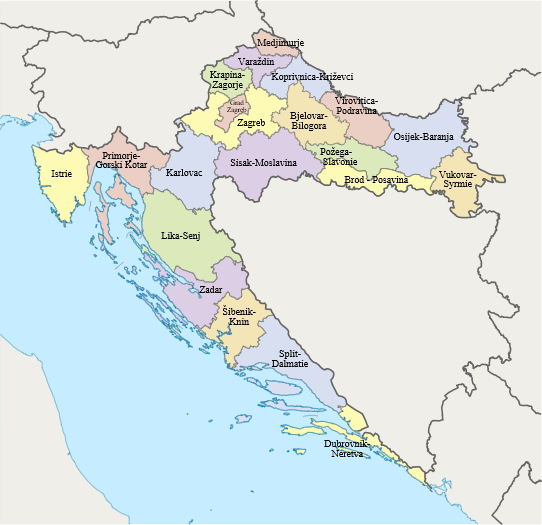

The basic units of regional self-government are the counties
(županija in Croatian). The present administrative territorial
division of the country was introduced in 1997, when the 1992
division was changed. Smaller administrative territorial units
within counties are cities/towns in urban areas, and municipalities
in other areas. According to the 2006 Act, Croatia has 127 towns/cities and
429 municipalities.
The county, as a unit of territorial division in Croatia, has a
long history. Counties are mentioned as early as the 10th century,
first in the southern part of the country, and later in the north. They
continued to exist up to the 20th century, in different numbers and with
changing territorial ranges, means of organisation and powers. After the
demilitarisation of the Military Border in 1881, there were 8 counties in the
Kingdom of Croatia and Slavonia: Modruš-Rijeka, Lika-Krbava, Zagreb, Varaždin,
Bjelovar-Križevac, Požega, Virovitica and Srijem.
County assembly (Croatian: županijska skupština) is a representative and deliberative body in each county. Assembly members are elected for a four-year term by popular vote (proportional system with closed lists and d'Hondt method) in local elections.
In each county exists a State Administration Office (Croatian: Ured državne uprave) which performs the tasks of the central government (under Ministry of Public Administration). Head of State Administration Office (predstojnik Ureda državne uprave), who is a university graduate in law, is appointed by the Croatian Government (in the City of Zagreb the mayor is responsible for the state administration).These offices ("administrations") are not subordinate to the county assembly or county prefect, but rather the direct presence of the state (similar to governorates or prefectures in certain countries).
The executive branch of each county's government is headed by a county
prefect (county president) (Croatian: župan), except that a mayor heads the
city of Zagreb's executive branch. Croatia's county prefects (with two deputy prefects),
mayor of Zagreb (with two deputy mayors) are elected for a four-year term by a majority
of votes cast within applicable local government units, with a runoff election if no
candidate achieves a majority in the first round of voting
(majoritarian vote, two-round system). County prefects
(with deputy prefects and mayor of Zagreb with his/her deputies) can
be recalled by a referendum. County administrative bodies are administrative
departments and services which are established for the performance of works in
the self-governing domain of the county, as well as for the performance of works
of state administration transferred to the county. Administrative departments and
services are managed by heads (principals) nominated by the county prefect on the
basis of a public competition.

Counties in Croatia
Croatia was first subdivided into counties in the Middle Ages.
Counties were first introduced in Croatia during the House of Trpimirović's rule.
The exact number and borders of these early counties are difficult to determine accurately;
they were considered to encompass areas subordinated to a single centre of local authority,
but the possessions of significant nobles had a legal status separate from local authority.
The traditional division of Croatia into counties was abolished in 1922,
when the oblasts of the Kingdom of Serbs, Croats and Slovenes were introduced;
these were later replaced by the banovinas of Yugoslavia. Socialist Republic of Croatia,
as a constituent part of post-World War II Yugoslavia had approximately 100
municipalities as main governmental units and local government entities. The
counties were reintroduced in 1992, but with significant territorial alterations
from the pre-1922 subdivisions; for instance, before 1922 Transleithanian Croatia was
divided into eight counties, but the new legislation established fourteen counties in
the same territory. Međimurje County was established in the eponymous region acquired
through the 1920 Treaty of Trianon. The county borders have sometimes changed
since their 1992 restoration (for reasons such as historical ties and requests by cities);
the latest revision took place in 2006.
{kind=link}